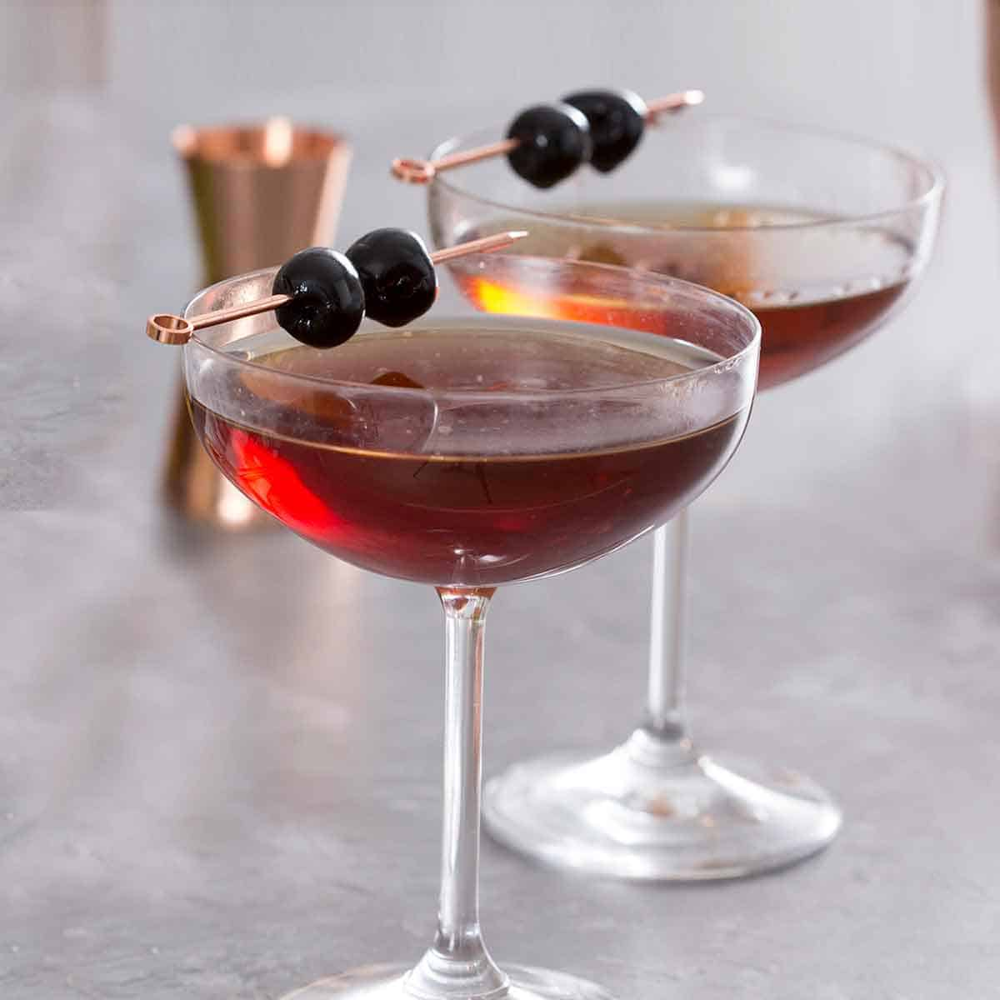

Manhatten

Ingredients
- 2 ounces rye whiskey
- 1 ounce sweet vermouth
- 2 dashes Angostura bitters
- Garnish: brandied cherry (or lemon twist, if preferred)
Steps
- Add the rye whiskey, sweet vermouth, and bitters into a mixing glass with ice and stir until well-chilled.
- Strain into a chilled Nick & Nora or coupe glass.
- Garnish with a brandied cherry (or a lemon twist, if preferred).
Home